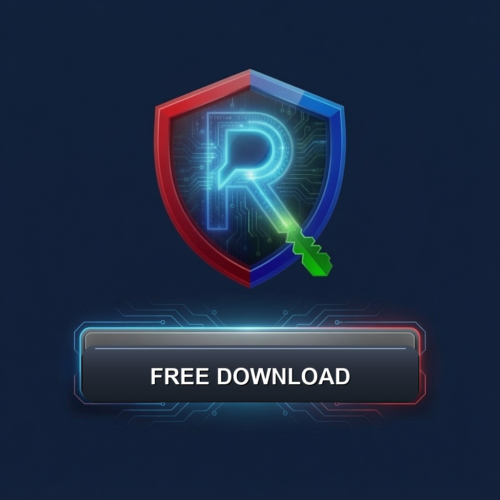

...privacy you can actually use...
Restore Privacy is a virtual private network for your device and personal use. Download the client free from the link below, try three days free with no obligation to pay, then keep your privacy restored with a Restore Privacy VPN subscription (£3 a month or £30 a year). Choose Germany or Singapore as your residual location in the app.
FREE DOWNLOAD

Detects your device and starts the free installer.
All platforms and KEYGEN checkout are also on the
Downloads Map and restoreprivacy.online.
KEYGEN from £3.00 per month
(yearly on /pay). Paste the code from your email in the app, then Connect.
Get a KEYGEN — /pay
How it works
- Download and install free (FREE DOWNLOAD button).
- Try three days, then buy a KEYGEN from £3.00/month on /pay.
- Paste the KEYGEN from your email and Connect.
What the client does
- Full-tunnel protection where the OS allows a system VPN (residual path).
- Choose residual location: Germany (default) or Singapore.
- Lean Settings by default — opt into privacy extras only when you want them.
- Android: optional “auto connect if idle” reopens the tunnel after an unexpected drop (gentle backoff; Disconnect still wins).
- Optional residual IPv6 leak posture, leak test, local connection log, and kill-switch opt-in with confirm.
- macOS free monopin ships Notarized Developer ID with Packet Tunnel host NE so first-use System Settings registration can work.
- Windows, Android, macOS, iOS, and Linux packages on the Downloads Map; Connect still needs trial or KEYGEN.
Plain-language walkthrough of every Settings control:
Settings guide.